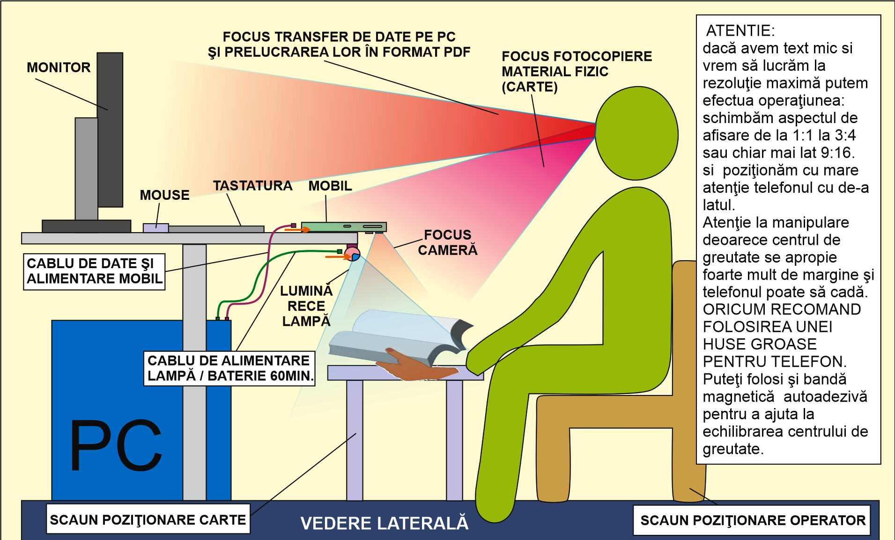
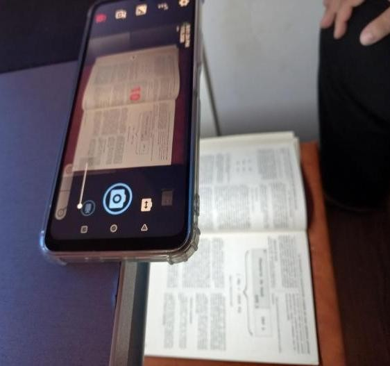
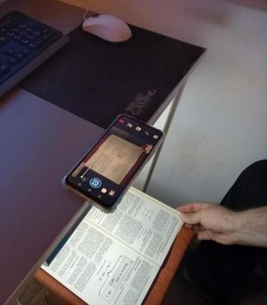
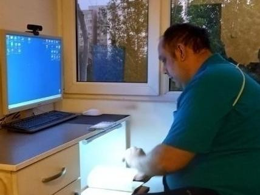

Illustrated hardware tutorial for LegatorOCR – LegatorOCR {{VERSION}}
After the works of Ion Alexandru Dumbravă ("An innovative approach to digitisation by accessible smart means", 2024). The illustrations of the work table are his.
Contents
1. What you get and who it is for
2. Choosing the equipment
3. What to buy and what it costs
4. Setting up the work table
5. Taking the photos
6. From photos to PDF with LegatorOCR
7. Common problems and remedies
8. Copyright and data safety
Sources and thanks
1. What you get and who it is for
The idea: "scanning with a phone" taken to a high-precision procedure, with means anyone can have. The phone stays fixed, the book rests on a stool below it, a cold-light lamp lights the page, and the photos are triggered by a remote control in a burst. LegatorOCR then turns the photos into a clean PDF with searchable text.
It suits libraries and museums without a budget for specialised equipment, personal archives, old books (over 70 years after the author's death), expedition reports of speleologists, geologists, palaeontologists and archaeologists, and architects and restorers. The result is good, but not "premium quality".

Diagram of the work table, side view: monitor and PC for processing, phone on the table's edge, cold-light lamp, the book stool and the operator's chair. Diagram: Ion Alexandru Dumbravă (A.I.D.M.I.A. project).
2. Choosing the equipment
Three families of equipment, with their strengths and limits:
Equipment
Strengths
Limits
Flatbed scanner
high quality; the page comes out straight and ready to edit
A3 is very expensive, A4 is sometimes too small; the book is bent on the glass and the spine suffers; tied to a PC; light passes over old leaves
Overhead book scanner (cradle)
high quality; suitable for old books
professional ones cost a lot; not easy to move (assembly, calibration); tied to a PC
Phone on the table (A.I.D.M.I.A.)
cheap, portable, fast; the book is not bent
not premium quality; needs average PC and phone skills; needs cold, even light
Left out of the comparison: handheld scanners (crooked lines, no preview, limited battery) and the digital camera (needs a lot of experience and often professional gear).
3. What to buy and what it costs
Prices are those of April 2024, in Romanian lei. The PC or laptop for processing is assumed to be yours already.
Item
Lei
Phone with a camera of at least 12 MP native and 128 GB (example: Xiaomi Redmi 13C)
550
Work lamp with cold light, with a 2 m USB cable
70
Thick phone case
20
Self-adhesive magnetic tape
30
Bluetooth photo remote (preferably rechargeable by USB)
40
128 GB microSD card (optional)
50
Estimated total
760
The table costs between 600 and 800 lei, less if you already own a good phone. The example phone was chosen for its low price, decent quality, enough battery, a 12 MP native camera (50 MP scaled) and a camera position that suits this set-up. Any phone with a good camera and a camera app that accepts a remote works (the stock app or Open Camera).
4. Setting up the work table
1Put the phone on the edge of the table with its camera pointing out.
2Under the phone's camera put the work stool, on which the book rests.
3Behind it put the operator's chair.
4At the table's edge, under its middle, fix the cold-light lamp.
5The remote can have a long cord worn round the neck, so it is always at hand.
Mind the light: no other strong sources in the room, only weak ambient light. Otherwise reflections and shadows appear.
Three tips from the diagram
Small print and maximum resolution: change the camera's aspect ratio from 1:1 to 3:4 or even 9:16 and position the phone very carefully, sideways to the book.
The phone's centre of gravity gets close to the edge and it can fall: use a thick case.
Self-adhesive magnetic tape helps balance the centre of gravity.
5. Taking the photos
1Set up the camera app (or Open Camera) and pair the remote with the phone.
2Place the phone on the table's edge and switch the lamp on, cold light, at about 2/3 of full power.
3Prepare the book and put it on the photographing stool.
4Start the burst with 10 seconds between frames. With experience you can go down to 5 seconds.
5After each frame turn the page carefully and wait for the next frame.
6At the end stop the camera from the remote.
7Transfer the pictures to the computer and remove the failed frames.
Why a remote: so you never touch the phone by accident and make it fall. The emergency stop is also done from the remote.

The phone on the table's edge with the camera app open; the book is below.

The phone seen from the side: the book, on the work stool, stays in frame while the operator turns the pages.

The operator at the table; the lamp lights the book and the monitor stays for processing.
6. From photos to PDF with LegatorOCR
The original procedure uses three programs in a chain (ScanTailor, NAPS, PDF24). LegatorOCR does the whole chain in one program:
1Add the photos: File → Add folder… (or drag them into the window). They come in the order they were taken.
2Pick a starting profile on the start screen (for example book-bw for a text book, book-small-color for a colour one) and keep the automatic settings: splitting the sheet into two pages, straightening, cropping the margins.
3Go through the pages: those marked orange need attention. Quick fixes: Rotate, 180°, "Auto", the "White paper" box for the same paper tone on all pages.
4Export the PDF (Ctrl+E). With the OCR box ticked you get searchable text.
5Prepare two copies: one at maximum quality (archive) and one compressed for online publication, with a lower output resolution and JPEG quality (or the PDF target size).
7. Common problems and remedies
What you see
What to do
Reflections or a bright patch on the page
Lower the lamp's intensity; switch off other lights; check that the lamp is under the middle of the table, not at the side.
Shaky or blurred photos
Use the remote, do not touch the phone; wait for the page to stop moving before the frame (10 s delay).
Fingers in the frame
Tick "Remove fingers at the edge" (Clean-up section): the program erases them if they touch the edge or are next to text. Keep your fingers at the very edge.
Page curved near the spine
Tick "Straighten curved lines"; if needed draw guide lines on the page.
Page with the text upside down
The "180°" button or the automatic detection; also check the thumbnails in the page list.
Left and right pages have a different tone
Tick "White paper" or "Even out lighting".
The sheet is crooked
"Auto-deskew", or fine-rotate the original before splitting.
8. Copyright and data safety
Copyright lasts for the author's life and 70 years after their death. Works in the public domain can be published; for the others, the author or heirs must assign the rights by a notarial deed.
If you publish under an assignment, note on the second page of the digitised copy, in the footer, that the material was digitised after obtaining the rights, with the notarial deed, its date and number.
Before publishing you can check the file with a file-scanning service (for example VirusTotal) and keep its fingerprint (MD5, SHA-256).
These are the notes of the procedure's author, not legal advice. For a real case consult a notary who specialises in copyright.
Sources and thanks
Ion Alexandru Dumbravă, An innovative approach to digitisation by accessible smart means (A.I.D.M.I.A.), 2024, a 58-page work; collaborator: Anca-Steliana Mirea.
The same author, summary article in the journal Biblioteca (May 2024).
Diagram and photos of the work table: the author's archive.
Video clips
Two short clips with subtitles in eight languages are in the docs/video/hardware folder: "Setting up the work table" and "Taking the photos".